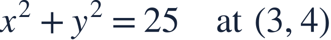
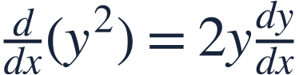
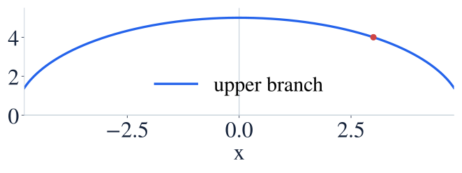
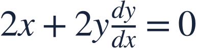
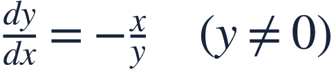
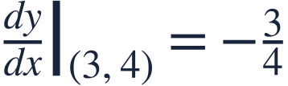
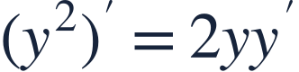
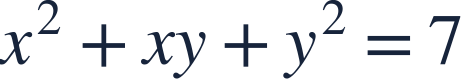

Implicit differentiation
음함수 미분

When x and y share an equation, differentiate without isolating y first.
x와 y가 한 식에 함께 있어도 y를 먼저 풀어내지 않고 미분할 수 있습니다.

When x and y share an equation, differentiate without isolating y first.
x와 y가 한 식에 함께 있어도 y를 먼저 풀어내지 않고 미분할 수 있습니다.

Treat y as a function of x. Differentiating y² needs the chain rule.
y를 x의 함수로 보세요. y²를 미분할 때 연쇄법칙이 필요합니다.

On the upper semicircle, the slope becomes more negative as x increases.
위쪽 반원에서는 x가 커질수록 기울기가 더 음수가 됩니다.

Differentiate both sides with respect to x.
양변을 x에 대해 미분합니다.

Solve for the derivative and keep its denominator condition.
도함수를 정리하고 분모 조건도 유지합니다.

The tangent falls 3 units for each 4 units to the right.
접선은 오른쪽으로 4만큼 갈 때 3만큼 내려갑니다.

Writing the derivative of y² as just 2y omits dy/dx.
y²의 도함수를 2y만 쓰면 dy/dx가 빠집니다.

Use both the product rule and implicit differentiation.
곱의 법칙과 음함수 미분을 함께 사용하세요.